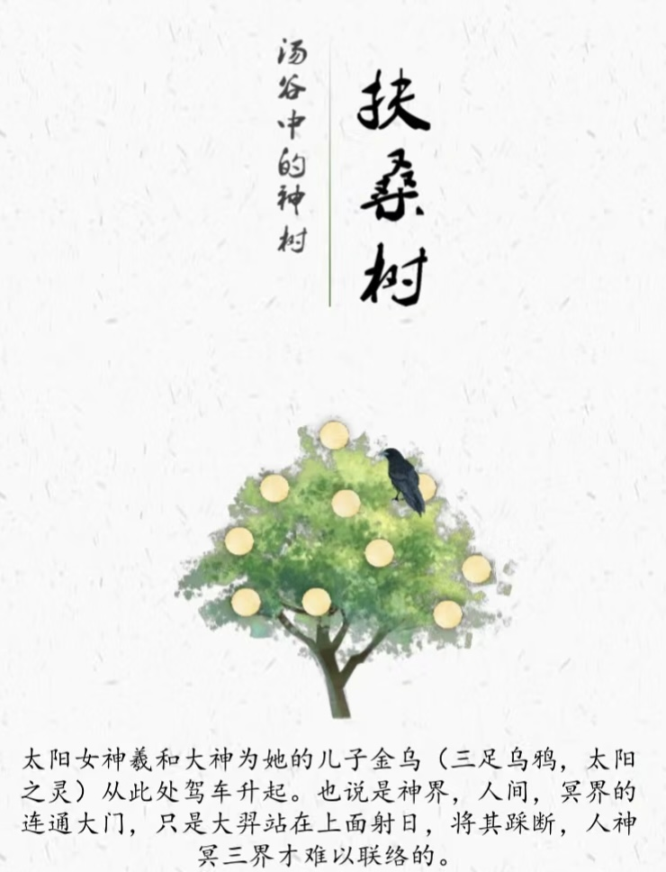
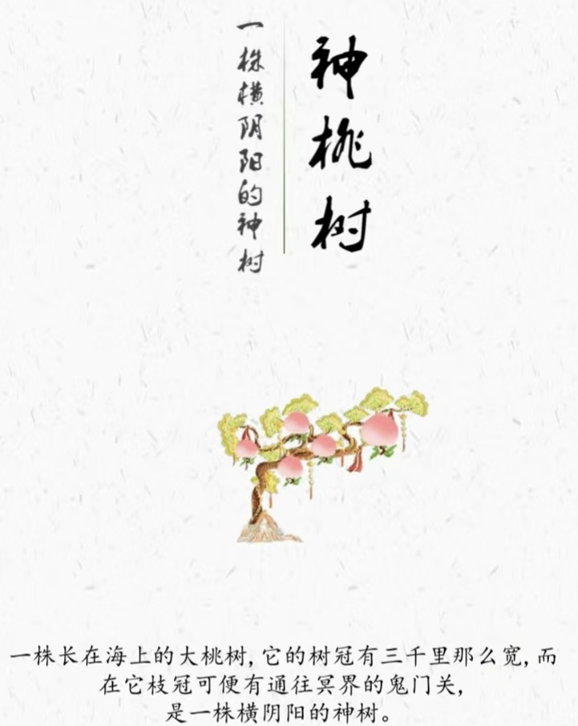
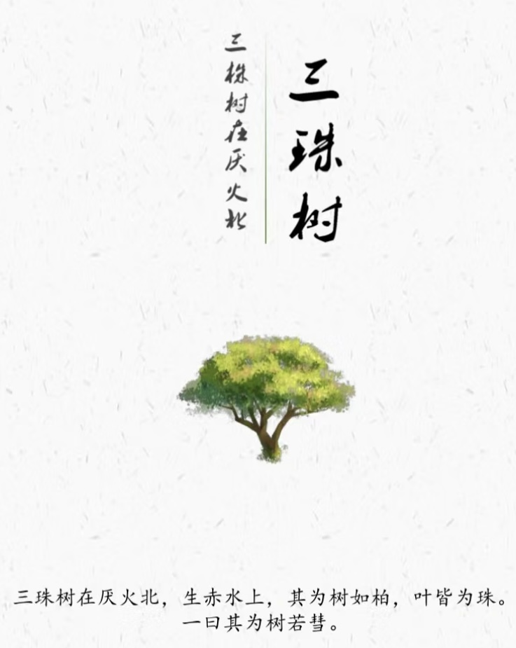
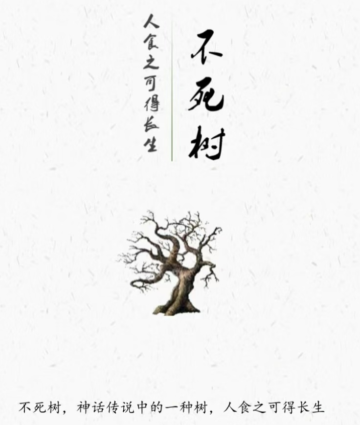
神木仙山：连接天地的古老传说与神秘风景
山海经中的神木
通天建木
不死甘木
三株之树
日出扶桑
万古长青
山海经中的仙山
南山经：浮玉山、招摇山，长江以南的山脉
西山经：华山、阴山、天山、昆仑山等山，晋陕之间的黄河以西、秦岭以北的山脉
北山经:北岳(恒)山、太行山、王屋山、燕山，晋陕之间的黄河以东、太行山燕山一线以西以北的山脉
东山经:泰山，黄河下游以东，长江以北的山脉
中山经：首阳山、少室山、泰室山、嵩山，河北、河南、湖北、湖南一线以及四川重庆的江北地区山脉
神木
扶桑
"汤谷上有扶桑，十日所浴，居水中。九日居下枝，一日居上枝。——《山海经》
扶桑树被认为是神界、人间和冥界的连通大门。"
"汤谷上有扶桑，十日所浴，居水中。九日居下枝，一日居上枝。——《山海经》
扶桑树被认为是神界、人间和冥界的连通大门。"
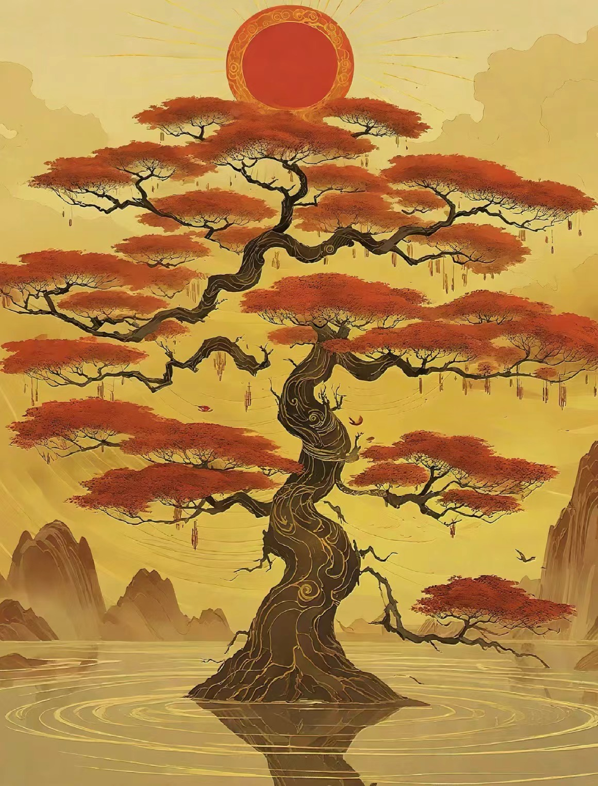
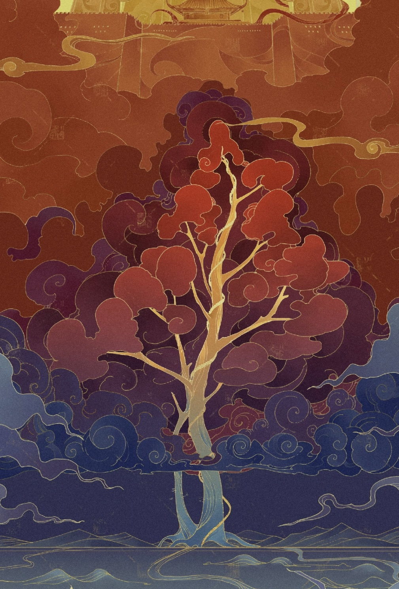
寻木
"寻木长千里，在拘缨南，生河上西北。一《山海经•海外北经》
渺渺寻木，生于河边。竦枝千里。上干云天。垂阴四极，下盖虞渊。"
"寻木长千里，在拘缨南，生河上西北。一《山海经•海外北经》
渺渺寻木，生于河边。竦枝千里。上干云天。垂阴四极，下盖虞渊。"
建木
“建木，百仞无枝，有九欘，下有九枸，其实如麻，其叶如芒， 大暤 爰过， 黄帝 所为。——《山海经•海内经》
通天建木，作为中国古代神话传说中的神树，具有沟通天地人神的神奇功能。”
“建木，百仞无枝，有九欘，下有九枸，其实如麻，其叶如芒， 大暤 爰过， 黄帝 所为。——《山海经•海内经》
通天建木，作为中国古代神话传说中的神树，具有沟通天地人神的神奇功能。”
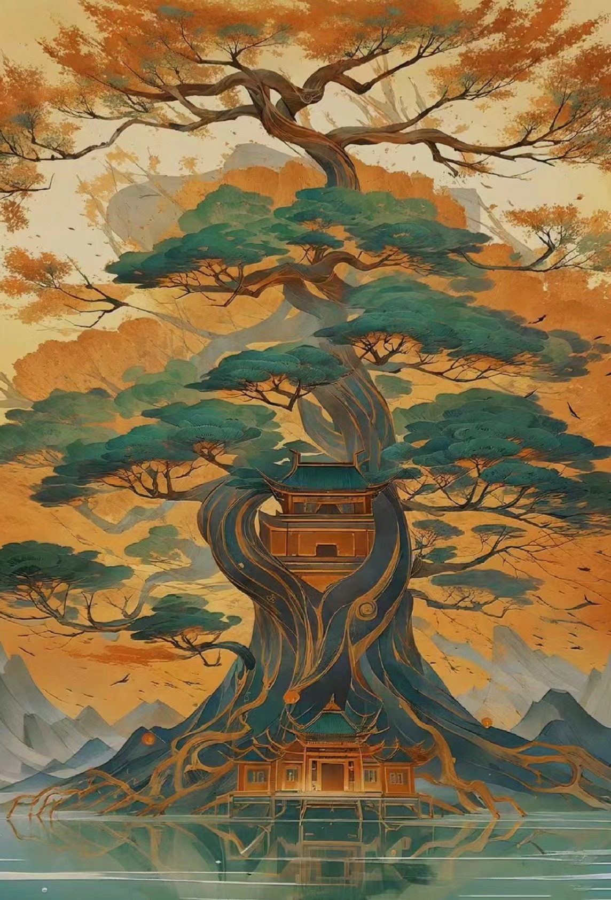
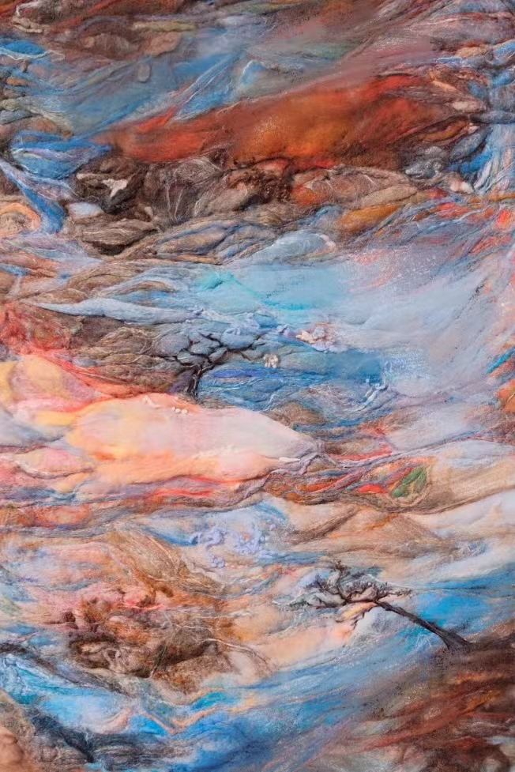
若木
“大荒之中，有衡石山、九阴山、洞野之山，上有赤树，青叶赤华，名曰若木。——《山海经•大荒北经》
若木与若水有着紧密的联系，若木代表着太阳西下的归宿，是日落之处的神树。”
“大荒之中，有衡石山、九阴山、洞野之山，上有赤树，青叶赤华，名曰若木。——《山海经•大荒北经》
若木与若水有着紧密的联系，若木代表着太阳西下的归宿，是日落之处的神树。”
仙山
浮玉之山
“又东五百里，曰浮玉之山，北望具区，东望诸毗。一《山海经•南山经》”
“又东五百里，曰浮玉之山，北望具区，东望诸毗。一《山海经•南山经》”
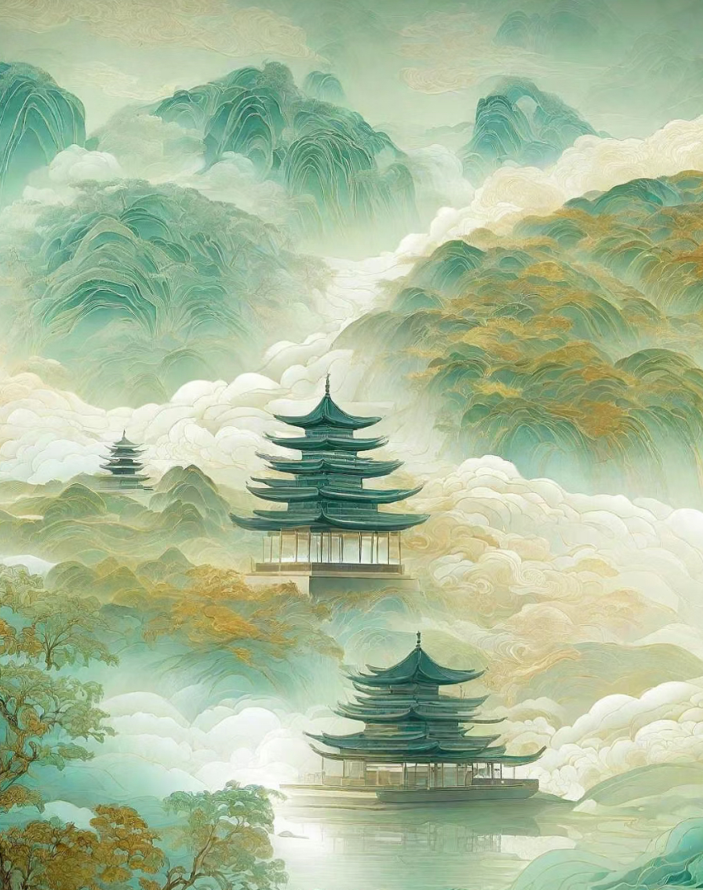
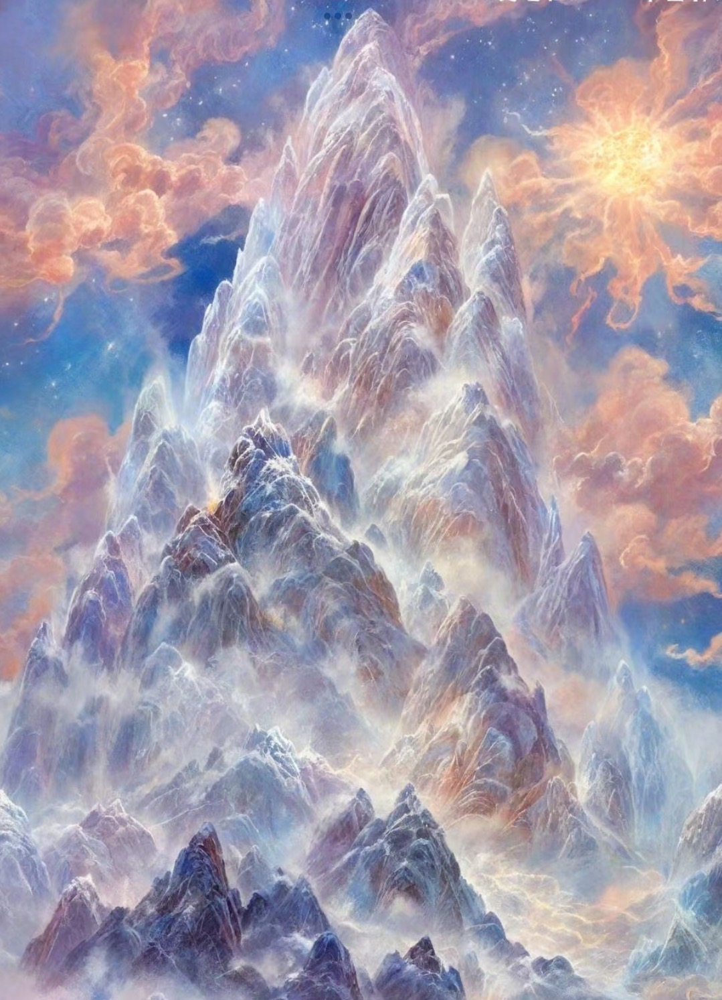
昆仑山
“西海之南，流沙之滨，赤水之后，黑水之前，有大山，名曰昆仑之丘。——《山海经•大荒西经》”
“西海之南，流沙之滨，赤水之后，黑水之前，有大山，名曰昆仑之丘。——《山海经•大荒西经》”
青丘山
“又东三百里，曰青丘之山。其阳多玉，其阴多青、雘。——《山海经•南山经》”
“又东三百里，曰青丘之山。其阳多玉，其阴多青、雘。——《山海经•南山经》”
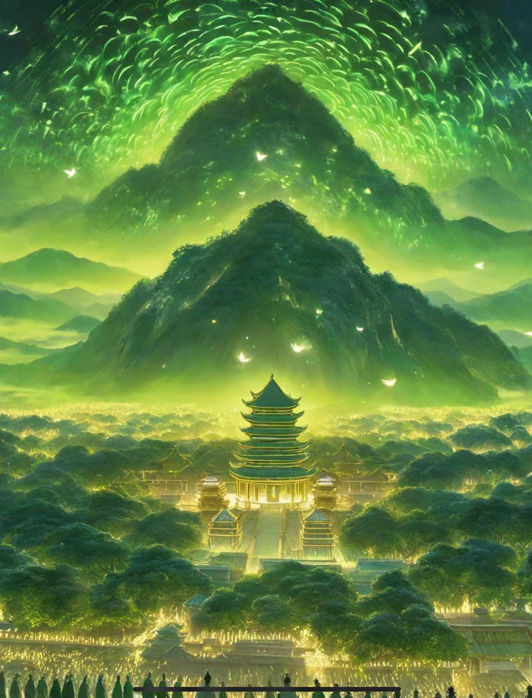
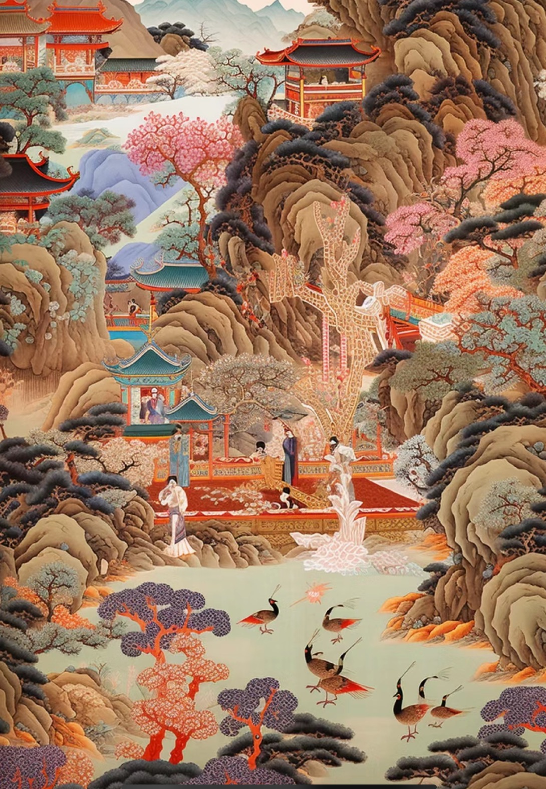
渤山
"琅邪台在渤海间，琅邪之东。其北有山，一曰在海间。——《山海经•海内东经》"
"琅邪台在渤海间，琅邪之东。其北有山，一曰在海间。——《山海经•海内东经》"
“吾生山海间，浪迹万物先”